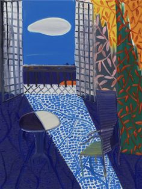
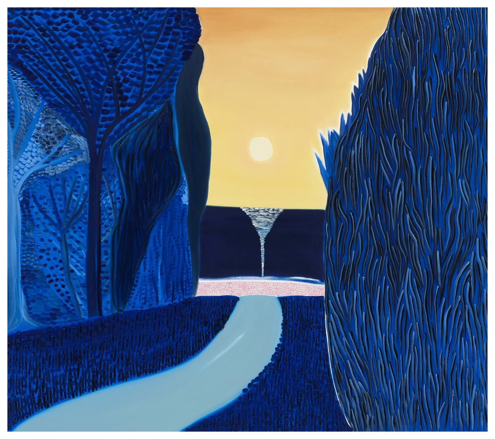

La película comenzará en unos instantes. Anunció la estúpida voz. Todos aquellos sin sitio esperarán al siguiente espectáculo. Nos colocamos lentamente, lánguidamente en el pasillo. El auditorio era enorme y silencioso. Mientras nos sentábamos y oscurecía,
la voz continuaba. El programa de esta tarde no es nuevo. Has visto este espectáculo una y otra vez. Has visto tu nacimiento, tu vida y tu muerte. Podrás recordar todo el resto. ¿Tendrás un buen mundo cuando mueras? ¿Bastante para basarlo
en una película? Me estoy yendo de aquí. ¿Adónde vas? Al otro lado de la mañana. Por favor, no persigas las nubes, pagodas. Su sexo le atrajo como una cálida y amistosa mano. Está bien, todos tus amigos están aquí. ¿Cuándo podré verlos?
Después de que hayas comido. No tengo hambre. Uh, quisimos decir golpeado.
Burla permanente, danos una hora para la magia. Nosotros los del guante púrpura. Nosotros los del estornino vuelo y hora aterciopelada. Nosotros los de la raza del placer árabe. Nosotros los de la cúpula solar y la noche. Danos un credo en
el que creer. Una noche de lujuria Danos confianza en la noche. Danos color, cientos de matices una rica mandela, para mí y para ti y para tu sedosa casa de sauces. Una cabeza, sabiduría y una cama problemático decreto. Burla permanente
te he reclamado. Solíamos creer en los antiguos buenos días. Todavía recibimos de pequeñas formas las Cosas de Bondad. Una frente antideportiva. Olvida y permite.

Despierta Sacúdete los sueños de tu pelo Mi preciosa y dulce niña. Elige el día y el signo para tu día El día es divino. La primera cosa que ves. Una inmensa y radiante playa en una bonita y adornada luna Parejas desnudas corren por sus tranquilos
lados Y reímos como dulces, locos niños Inmersos en la lana confusa de la mente infantil La música y las voces giran a nuestro alrededor Eligen su antiguo cantar Tu tiempo ha regresado Elige ahora, su dulce canto Debajo de la luna Junto
al lago antiguo Entra otra vez en el dulce bosque Entra en el cálido sueño Ven con nosotros Todo está roto y baila
Puedo hacer que la tierra se pare en seco. Hice desaparecer los coches azules. Me puedo hacer invisible o pequeño. Puedo convertirme en gigante y alcanzar las cosas más lejanas. Puedo cambiar el curso de la naturaleza. Puedo situarme en cualquier
lugar del espacio o el tiempo. Puedo invocar a los muertos. Puedo percibir sucesos de otros mundos, en lo más profundo de mi mente y en la mente de los demás. Yo puedo. Yo soy.
Te diré esto. Ninguna recompensa eterna nos perdonará ahora. Por malgastar el alba. Vuelvo a aquellos días, todo era más sencillo y más confuso. Una noche de verano, yendo al muelle. Me encontré con dos jóvenes chicas. La rubia se llamaba
Libertad. La morena, Empresa. Hablamos y me contaron esta historia. Ahora escucha esto… Te hablaré sobre Texas radio y su gran ritmo Suavemente conducido, lento y loco. Como algún nuevo lenguaje. Llegando a tu cabeza con el frío, furia
repentina de un mensajero divino. Déjame hablarte sobre la angustia y la pérdida de dios. Divagando, divagando en la desesperada noche. Aquí fuera no hay estrellas en todo el perímetro. Aquí fuera estamos colocados. Inmaculados.
